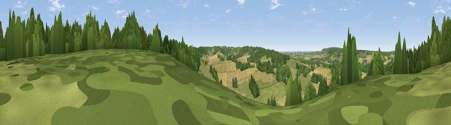

Viewpoint near Crundale
#32807 in England · top 51% of its area beats it · near Crundale · footpathWhere it is
The exact computed spot (TR 08625 50075). Click the marker for map links.
Public access: a public right of way passes within 53 m of this spot. Computed from Natural England's CRoW access layer and OpenStreetMap rights of way — not the legal definitive map. Always verify locally.
The view, rendered

A 360° render of this exact spot computed from the terrain model, tree cover and land cover — summer colours, afternoon light, calibrated against photographs of famous viewpoints. Real trees, hedges and buildings will differ in detail.
The panorama
Grey silhouette: terrain skyline in each direction (720 bearings, Earth curvature and refraction included). Dashed green: skyline with trees (+15 m) and buildings (+8 m) as obstacles. Blue strip: how far the ground is visible on each bearing.
Where the view opens
Wedge length = distance to the farthest visible ground on that bearing (vegetation-aware). Rings at 10, 25 and 50 km.
What fills the view
36% cropland · 33% grassland · 30% woodland
Angular shares of the visible panorama (visual magnitude), not map area. Landscape diversity 0.49 (0–1 Shannon).
Key numbers
More beautiful places nearby
The staircase of upgrades: each row has a higher view potential than everything closer. Driving times are estimates from straight-line distance, calibrated against real road routing — check an actual route before setting out.
| Place | Direction | Drive | Score |
|---|---|---|---|
| Viewpoint near Wye | SSW · 4 km | ~9 min | 70.9 |
| Viewpoint near Brabourne | S · 7 km | ~15 min | 71.6 |
| Viewpoint near Brabourne | SSE · 8 km | ~16 min | 71.9 |
| Viewpoint near Westwell | W · 10 km | ~20 min | 72.2 |
| Tolsford Hill | SSE · 14 km | ~25 min | 77.9 |
| Viewpoint near Capel-le-Ferne | SE · 20 km | ~33 min | 80.2 |
| Viewpoint near Willingdon | SW · 70 km | ~93 min | 83.4 |
| Wilmington Hill | SW · 71 km | ~95 min | 85.4 |
51.21176, 0.98559 · source: screening · position refined by local search. Computed location — check access rights before visiting.